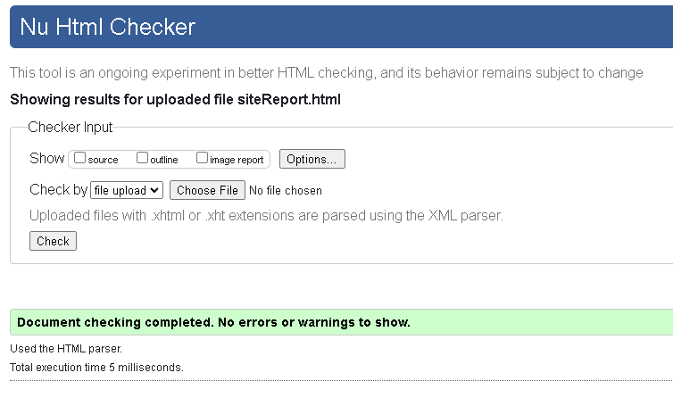
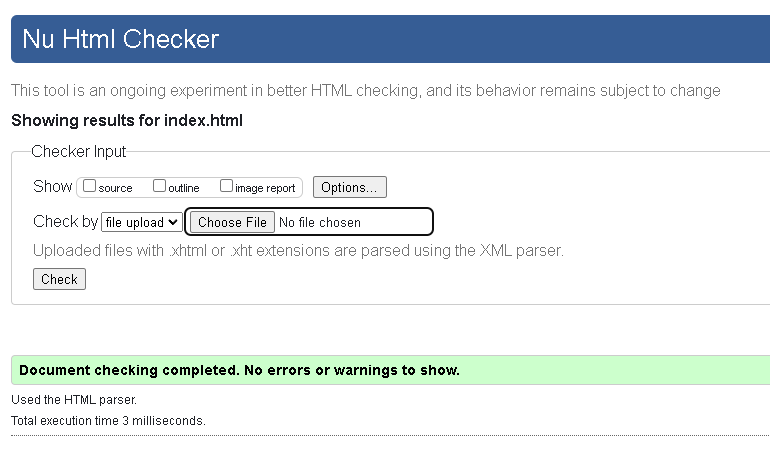
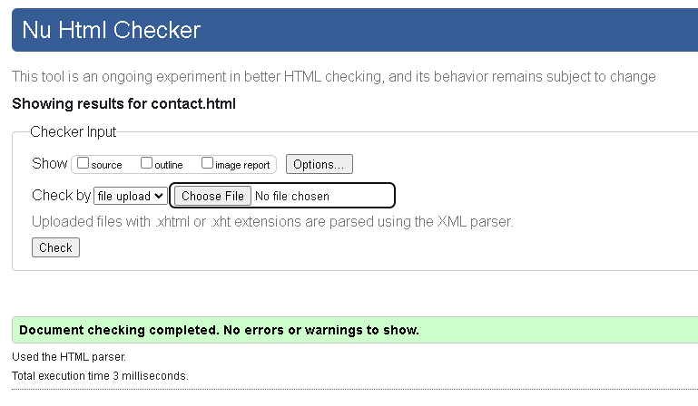
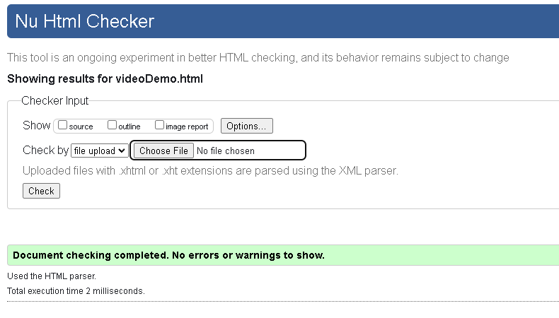
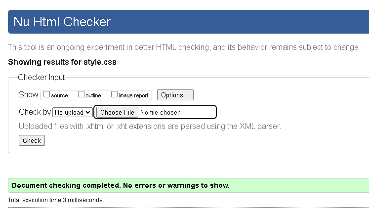
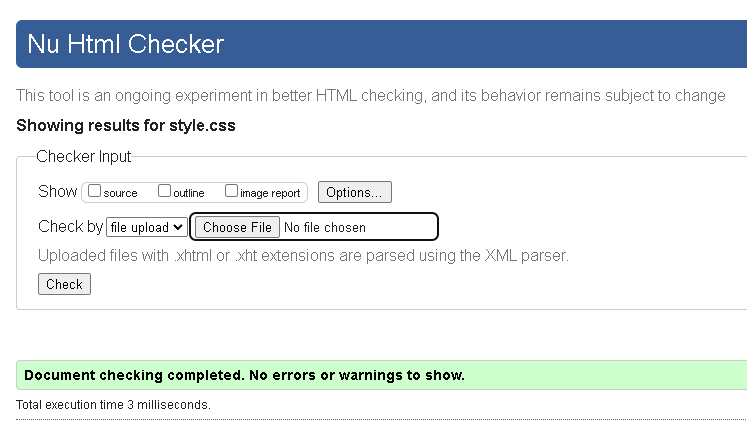

Site Report
Working on this portfolio site has been a good practice to learn more on how to develop a web site, coding and designing. Throughout the process, I created five distinct pages: the home page, project showcase, contact form, a video demonstration of the tool, and this site report. This was important since every page had a unique goal as an academic exercise gave me crucial experience on pages structuring and styling.
This meant that consistency of design was one of my major problems due to page colours and layout also had to be consistent throughout the entire website. I also experienced some difficulties while working with CSS, for example trying to understand the differences between such units as em, px and etc. Moreover utilizing Git and GitHub for the version also provided better control, document of version which were created, easy to track changes done and deployment of the website also.
Design Choices
As for the design, I opted for a contemporary design so I used a “Poppins” Google font for the text and got a light background color with white and blue content sections and grey for the headers and borders. This color scheme was used for cosmetic purposes but at the same time a color scheme that one could read easily from. The final piece of the top navigation bar is straightforward and can provide a quick path to any segment of the site. The contact form launches the user’s email client and the project page is laid out in a grid for easy future content management.
Several websites inspired my design, including here and here which both offer minimal and sleek portfolio templates.
Validation Reports
I validated my HTML and CSS through W3C, ensuring the code meets web standards. Below are screenshots of the validation results:
    

The validation confirmed that the HTML and CSS had no errors, ensuring compatibility across different browsers and devices.
Video Demo
A video walkthrough of the site is available here: Video Demo.